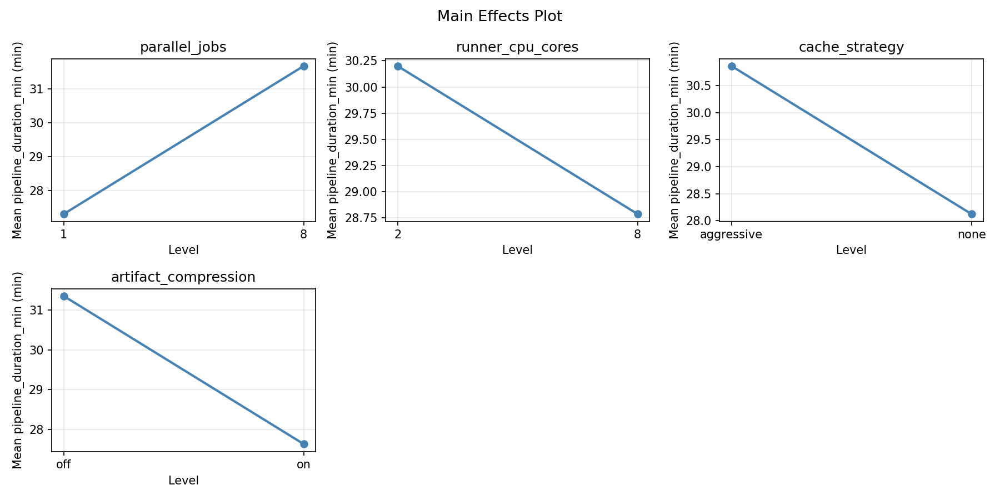
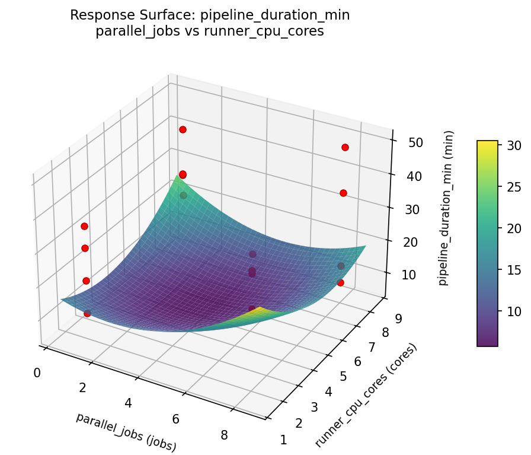

Experimental Setup
Factors
| Factor | Low | High | Unit |
|---|---|---|---|
parallel_jobs | 1 | 8 | jobs |
runner_cpu_cores | 2 | 8 | cores |
cache_strategy | none | aggressive | |
artifact_compression | off | on |
Fixed: ci_platform = github_actions, repo_size = medium
Responses
| Response | Direction | Unit |
|---|---|---|
pipeline_duration_min | ↓ minimize | min |
resource_cost_usd | ↓ minimize | USD |
Configuration
use_cases/77_cicd_pipeline_parallelism/config.json
{
"metadata": {
"name": "CI/CD Pipeline Parallelism",
"description": "Full factorial of parallel jobs, runner cores, cache strategy, and artifact compression for pipeline duration and cost"
},
"factors": [
{
"name": "parallel_jobs",
"levels": [
"1",
"8"
],
"type": "continuous",
"unit": "jobs"
},
{
"name": "runner_cpu_cores",
"levels": [
"2",
"8"
],
"type": "continuous",
"unit": "cores"
},
{
"name": "cache_strategy",
"levels": [
"none",
"aggressive"
],
"type": "categorical",
"unit": ""
},
{
"name": "artifact_compression",
"levels": [
"off",
"on"
],
"type": "categorical",
"unit": ""
}
],
"fixed_factors": {
"ci_platform": "github_actions",
"repo_size": "medium"
},
"responses": [
{
"name": "pipeline_duration_min",
"optimize": "minimize",
"unit": "min"
},
{
"name": "resource_cost_usd",
"optimize": "minimize",
"unit": "USD"
}
],
"settings": {
"operation": "full_factorial",
"test_script": "use_cases/77_cicd_pipeline_parallelism/sim.sh"
}
}
Experimental Matrix
The Full Factorial Design produces 16 runs. Each row is one experiment with specific factor settings.
| Run | parallel_jobs | runner_cpu_cores | cache_strategy | artifact_compression |
|---|---|---|---|---|
| 1 | 1 | 8 | aggressive | on |
| 2 | 8 | 2 | none | on |
| 3 | 1 | 8 | none | on |
| 4 | 1 | 8 | aggressive | off |
| 5 | 8 | 8 | aggressive | off |
| 6 | 8 | 2 | aggressive | off |
| 7 | 8 | 8 | none | off |
| 8 | 8 | 2 | none | off |
| 9 | 1 | 2 | none | on |
| 10 | 1 | 2 | aggressive | off |
| 11 | 8 | 8 | none | on |
| 12 | 8 | 8 | aggressive | on |
| 13 | 1 | 8 | none | off |
| 14 | 8 | 2 | aggressive | on |
| 15 | 1 | 2 | none | off |
| 16 | 1 | 2 | aggressive | on |
Step-by-Step Workflow
1
Preview the design
Terminal
$ python doe.py info --config use_cases/77_cicd_pipeline_parallelism/config.json
2
Generate the runner script
Terminal
$ python doe.py generate --config use_cases/77_cicd_pipeline_parallelism/config.json \
--output use_cases/77_cicd_pipeline_parallelism/results/run.sh --seed 42
3
Execute the experiments
Terminal
$ bash use_cases/77_cicd_pipeline_parallelism/results/run.sh
4
Analyze results
Terminal
$ python doe.py analyze --config use_cases/77_cicd_pipeline_parallelism/config.json
5
Get optimization recommendations
Terminal
$ python doe.py optimize --config use_cases/77_cicd_pipeline_parallelism/config.json
6
Generate the HTML report
Terminal
$ python doe.py report --config use_cases/77_cicd_pipeline_parallelism/config.json \
--output use_cases/77_cicd_pipeline_parallelism/results/report.html
Features Exercised
| Feature | Value |
|---|---|
| Design type | full_factorial |
| Factor types | continuous (2), categorical (2) |
| Arg style | double-dash |
| Responses | 2 (pipeline_duration_min ↓, resource_cost_usd ↓) |
| Total runs | 16 |
Analysis Results
Generated from actual experiment runs using the DOE Helper Tool.
Response: pipeline_duration_min
Top factors: parallel_jobs (47.4%), runner_cpu_cores (32.0%), artifact_compression (13.8%).
Pareto Chart

Main Effects Plot

Response: resource_cost_usd
Top factors: runner_cpu_cores (66.3%), cache_strategy (23.3%), parallel_jobs (6.2%).
Pareto Chart

Main Effects Plot

Response Surface Plots
3D surfaces fitted with quadratic RSM. Red dots are observed data points.
pipeline duration min parallel jobs vs runner cpu cores

resource cost usd parallel jobs vs runner cpu cores

Full Analysis Output
doe analyze
=== Main Effects: pipeline_duration_min ===
Factor Effect Std Error % Contribution
--------------------------------------------------------------
parallel_jobs -9.0125 2.9826 47.4%
runner_cpu_cores 6.0875 2.9826 32.0%
artifact_compression 2.6125 2.9826 13.8%
cache_strategy 1.2875 2.9826 6.8%
=== Interaction Effects: pipeline_duration_min ===
Factor A Factor B Interaction % Contribution
------------------------------------------------------------------------
runner_cpu_cores cache_strategy -11.7625 33.8%
parallel_jobs cache_strategy -6.9125 19.8%
parallel_jobs runner_cpu_cores 5.5375 15.9%
runner_cpu_cores artifact_compression 4.9625 14.2%
parallel_jobs artifact_compression -4.6875 13.5%
cache_strategy artifact_compression -0.9875 2.8%
=== Summary Statistics: pipeline_duration_min ===
parallel_jobs:
Level N Mean Std Min Max
------------------------------------------------------------
1 8 34.0000 8.9998 22.1000 49.7000
8 8 24.9875 13.3266 9.0000 42.6000
runner_cpu_cores:
Level N Mean Std Min Max
------------------------------------------------------------
2 8 26.4500 13.9693 9.0000 49.7000
8 8 32.5375 9.4178 14.1000 42.6000
cache_strategy:
Level N Mean Std Min Max
------------------------------------------------------------
aggressive 8 28.8500 11.4333 10.4000 42.6000
none 8 30.1375 13.1660 9.0000 49.7000
artifact_compression:
Level N Mean Std Min Max
------------------------------------------------------------
off 8 28.1875 11.1444 10.4000 42.6000
on 8 30.8000 13.3008 9.0000 49.7000
=== Main Effects: resource_cost_usd ===
Factor Effect Std Error % Contribution
--------------------------------------------------------------
runner_cpu_cores -1.5812 0.3923 66.3%
cache_strategy -0.5562 0.3923 23.3%
parallel_jobs 0.1487 0.3923 6.2%
artifact_compression -0.0987 0.3923 4.1%
=== Interaction Effects: resource_cost_usd ===
Factor A Factor B Interaction % Contribution
------------------------------------------------------------------------
runner_cpu_cores cache_strategy 1.1712 31.1%
cache_strategy artifact_compression 1.0238 27.2%
parallel_jobs cache_strategy 0.9313 24.7%
parallel_jobs artifact_compression 0.4738 12.6%
runner_cpu_cores artifact_compression -0.0963 2.6%
parallel_jobs runner_cpu_cores -0.0688 1.8%
=== Summary Statistics: resource_cost_usd ===
parallel_jobs:
Level N Mean Std Min Max
------------------------------------------------------------
1 8 1.5038 1.4863 0.0000 4.0300
8 8 1.6525 1.7479 -0.0300 4.3700
runner_cpu_cores:
Level N Mean Std Min Max
------------------------------------------------------------
2 8 2.3687 1.8198 0.0700 4.3700
8 8 0.7875 0.7322 -0.0300 2.0200
cache_strategy:
Level N Mean Std Min Max
------------------------------------------------------------
aggressive 8 1.8562 1.8164 -0.0300 4.3700
none 8 1.3000 1.3418 0.0700 4.1900
artifact_compression:
Level N Mean Std Min Max
------------------------------------------------------------
off 8 1.6275 1.4989 0.1700 4.3700
on 8 1.5288 1.7391 -0.0300 4.1900
Optimization Recommendations
doe optimize
=== Optimization: pipeline_duration_min ===
Direction: minimize
Best observed run: #12
parallel_jobs = 1
runner_cpu_cores = 8
cache_strategy = aggressive
artifact_compression = off
Value: 9.0
RSM Model (linear, R² = 0.1421, Adj R² = -0.1699):
Coefficients:
intercept +29.4938
parallel_jobs +0.1688
runner_cpu_cores -0.1063
cache_strategy +3.1437
artifact_compression +3.0063
RSM Model (quadratic, R² = 0.4006, Adj R² = -7.9914):
Coefficients:
intercept +5.8988
parallel_jobs +0.1688
runner_cpu_cores -0.1062
cache_strategy +3.1437
artifact_compression +3.0062
parallel_jobs*runner_cpu_cores +2.7187
parallel_jobs*cache_strategy -3.7812
parallel_jobs*artifact_compression -2.2438
runner_cpu_cores*cache_strategy +1.9438
runner_cpu_cores*artifact_compression -0.7687
cache_strategy*artifact_compression -1.8437
parallel_jobs^2 +5.8988
runner_cpu_cores^2 +5.8988
cache_strategy^2 +5.8988
artifact_compression^2 +5.8988
Curvature analysis:
artifact_compression coef=+5.8988 convex (has a minimum)
parallel_jobs coef=+5.8988 convex (has a minimum)
runner_cpu_cores coef=+5.8988 convex (has a minimum)
cache_strategy coef=+5.8988 convex (has a minimum)
Notable interactions:
parallel_jobs*cache_strategy coef=-3.7812 (antagonistic)
parallel_jobs*runner_cpu_cores coef=+2.7187 (synergistic)
parallel_jobs*artifact_compression coef=-2.2438 (antagonistic)
runner_cpu_cores*cache_strategy coef=+1.9438 (synergistic)
cache_strategy*artifact_compression coef=-1.8437 (antagonistic)
runner_cpu_cores*artifact_compression coef=-0.7687 (antagonistic)
Predicted optimum (from linear model):
parallel_jobs = 8
runner_cpu_cores = 2
cache_strategy = none
artifact_compression = on
Predicted value: 35.9188
Model quality: Weak fit — consider adding center points or using a different design.
Factor importance:
1. cache_strategy (effect: 6.3, contribution: 48.9%)
2. artifact_compression (effect: 6.0, contribution: 46.8%)
3. parallel_jobs (effect: 0.3, contribution: 2.6%)
4. runner_cpu_cores (effect: -0.2, contribution: 1.7%)
=== Optimization: resource_cost_usd ===
Direction: minimize
Best observed run: #16
parallel_jobs = 1
runner_cpu_cores = 8
cache_strategy = aggressive
artifact_compression = on
Value: -0.03
RSM Model (linear, R² = 0.0411, Adj R² = -0.3076):
Coefficients:
intercept +1.5781
parallel_jobs -0.0494
runner_cpu_cores -0.2131
cache_strategy +0.2156
artifact_compression -0.0244
RSM Model (quadratic, R² = 0.3885, Adj R² = -8.1729):
Coefficients:
intercept +0.3156
parallel_jobs -0.0494
runner_cpu_cores -0.2131
cache_strategy +0.2156
artifact_compression -0.0244
parallel_jobs*runner_cpu_cores -0.6756
parallel_jobs*cache_strategy +0.3781
parallel_jobs*artifact_compression +0.0806
runner_cpu_cores*cache_strategy -0.3381
runner_cpu_cores*artifact_compression +0.0044
cache_strategy*artifact_compression +0.2856
parallel_jobs^2 +0.3156
runner_cpu_cores^2 +0.3156
cache_strategy^2 +0.3156
artifact_compression^2 +0.3156
Curvature analysis:
runner_cpu_cores coef=+0.3156 convex (has a minimum)
parallel_jobs coef=+0.3156 convex (has a minimum)
cache_strategy coef=+0.3156 convex (has a minimum)
artifact_compression coef=+0.3156 convex (has a minimum)
Notable interactions:
parallel_jobs*runner_cpu_cores coef=-0.6756 (antagonistic)
parallel_jobs*cache_strategy coef=+0.3781 (synergistic)
runner_cpu_cores*cache_strategy coef=-0.3381 (antagonistic)
Predicted optimum (from linear model):
parallel_jobs = 1
runner_cpu_cores = 2
cache_strategy = none
artifact_compression = off
Predicted value: 2.0806
Model quality: Weak fit — consider adding center points or using a different design.
Factor importance:
1. cache_strategy (effect: 0.4, contribution: 42.9%)
2. runner_cpu_cores (effect: -0.4, contribution: 42.4%)
3. parallel_jobs (effect: -0.1, contribution: 9.8%)
4. artifact_compression (effect: -0.0, contribution: 4.9%)